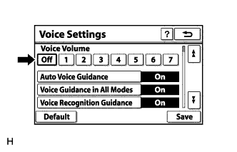
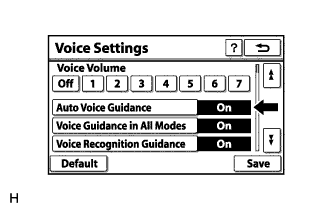

СИСТЕМА НАВИГАЦИИ (для моделей с жестким диском) > Голосовое управление не работает |
| 1.ПРОВЕРЬТЕ НАСТРОЙКИ СИСТЕМЫ НАВИГАЦИИ |
|  |
Откройте экран "Voice Settings" (голосовые настройки).
Проверьте, не выбрано ли значение "Off" (выкл).
|
| ||||
| OK | |
| 2.ПРОВЕРЬТЕ НАСТРОЙКИ СИСТЕМЫ НАВИГАЦИИ |
|  |
Откройте экран "Voice Settings" (голосовые настройки).
Проверьте, не выбрано ли для параметра "Auto Voice Guidance" (автоматическая система голосового управления) значение OFF (ВЫКЛ).
|
| ||||
| OK | |
| 3.ПРОВЕРЬТЕ НАСТРОЙКИ СИСТЕМЫ НАВИГАЦИИ |
Откройте экран "Voice Settings" (голосовые настройки).
Проверьте, не выбрано ли для параметра "Voice Guidance in All Modes" (голосовое управление во всех режимах) значение OFF (ВЫКЛ).
|
| ||||
| OK | |
| 4.ПРОВЕРЬТЕ РАБОТУ АУДИОСИСТЕМЫ |
Проверьте, слышен ли звук из бокового динамика со стороны водителя.
|
| ||||
| OK | ||
| ||